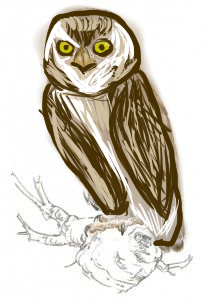

El mochuelo tamaulipeco es una pequeña ave nocturna endémica de México que habita principalmente zonas áridas y bosques del noreste del país.

Es una especie de búho pequeño que forma parte de la biodiversidad única de México.
El mochuelo tamaulipeco enfrenta amenazas como:
Podemos ayudar protegiendo los bosques, cuidando los ecosistemas, apoyando reservas naturales y promoviendo la educación ambiental.